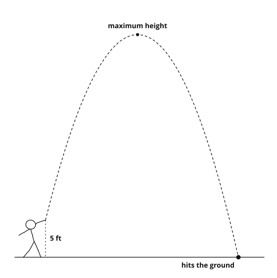

1. Why would we use a quadratic to model a ball thrown in the air?
{{a}}Gravity makes the height rise and then fall — that path is a parabola.
{{/a}}2. If a quadratic has two solutions, what might they represent in a real situation?
{{a}}Two moments when the quantity hits that value — e.g. on the way up and on the way down, or two break-even points.
{{/a}}3. When would only one of the two solutions make sense?
{{a}}When the other is negative (time, length or a count cannot be negative) or otherwise impossible in context.
{{/a}}| Feature | What it tells us | Example |
|---|---|---|
| Vertex | {{a}}the maximum or minimum value{{/a}} | {{a}}the highest point of a ball’s flight{{/a}} |
| y-intercept | {{a}}the starting value, at t = 0{{/a}} | {{a}}the height it was launched from{{/a}} |
| x-intercepts | {{a}}when the quantity is zero{{/a}} | {{a}}when the ball hits the ground{{/a}} |
| Axis of symmetry | {{a}}the input at the max or min; the graph is symmetric about it{{/a}} | {{a}}halfway through the flight{{/a}} |
| Opening direction | {{a}}whether there is a maximum (opens down) or a minimum (opens up){{/a}} | {{a}}thrown objects open downward{{/a}} |
a. A ball is thrown from a cliff. How tall is the cliff? {{a}}the y-intercept{{/a}}
b. A skateboarder rides a ramp. How long to reach the bottom? {{a}}an x-intercept{{/a}}
c. A business sells shirts. How many to break even? {{a}}the x-intercepts{{/a}}
d. A rocket is fired up. How high does it go? {{a}}the vertex{{/a}}

Part 1 — when does it hit the ground? Set h(t) = {{a}}0{{/a}}, because {{a}}the height is zero at ground level{{/a}}.
Solve with the quadratic formula:
{{a}}t = {{f −40 ± √1920/−32}}, and √1920 = 8√30 ≈ 43.82
{{/a}}Two answers: {{a}}t ≈ 2.62 and t ≈ −0.12{{/a}}. We reject the negative one because {{a}}time cannot be negative{{/a}}.
The ball lands after about {{a}}2.62{{/a}} seconds.
The maximum happens at the {{a}}vertex{{/a}}, so t = {{a}}−{{f b/2a}} = −{{f 40/−32}}{{/a}} = {{a}}1.25{{/a}}
Maximum height = h({{a}}1.25{{/a}}) = {{a}}30{{/a}} feet
0 = −16t2 + 24t + 6; disc = 576 + 384 = 960
t = {{f −24 ± √960/−32}}; the positive root is t ≈ 1.72 seconds.
{{/a}}Let x = {{a}}the width in feet{{/a}}, so the length is {{a}}x + 4{{/a}}.
Equation: {{a}}x(x + 4) = 96{{/a}} → standard form: {{a}}x2 + 4x − 96 = 0{{/a}}
Solutions: {{a}}(x + 12)(x − 8) = 0, so x = 8 or −12{{/a}} We reject {{a}}−12{{/a}} because {{a}}a width cannot be negative{{/a}}.
Width {{a}}8{{/a}} ft, length {{a}}12{{/a}} ft
Let w = pool width, so pool length = {{a}}w + 4{{/a}}.
The walkway adds {{a}}4{{/a}} feet to each dimension, so the outside is {{a}}w + 4{{/a}} by {{a}}w + 8{{/a}}.
Equation: {{a}}(w + 4)(w + 8) = 192 → w2 + 12w − 160 = 0{{/a}}
Pool: {{a}}8{{/a}} ft by {{a}}12{{/a}} ft
Let x = {{a}}the number of $1 increases{{/a}}
Price: {{a}}10 + x{{/a}} Tickets sold: {{a}}80 − 5x{{/a}}
Revenue: R(x) = {{a}}(10 + x)(80 − 5x){{/a}} = {{a}}−5x2 + 30x + 800{{/a}}
Vertex at x = {{a}}3{{/a}}, so the price is {{a}}$13{{/a}}, tickets sold {{a}}65{{/a}}, and maximum revenue {{a}}$845{{/a}}.
Careful: the vertex is not a whole dollar. What do you do then? {{a}}check the whole-dollar prices on either side — here R(3) = R(4) = $528, while the exact vertex $11.50 gives $529{{/a}}
{{a}}R(x) = (8 + x)(60 − 4x) = −4x2 + 28x + 480
Vertex at x = 3.5, so the best price is $11.50.
{{/a}}1. Which part of a quadratic gives the maximum or minimum value? {{a}}the vertex{{/a}}
2. What does a solution of h(t) = 0 usually represent in a height problem? {{a}}the moment the object reaches the ground (height 0){{/a}}
3. Why do some quadratic solutions get rejected in real problems? {{a}}negative times, lengths or counts do not make sense in context{{/a}}
Answer: {{a}}t = 2 seconds{{/a}}
{{a}}−16t(t − 2) = 0 → t = 0 or 2
{{/a}}Answer: {{a}}5 ft by 8 ft{{/a}}
{{a}}x(x+3) = 40 → (x+8)(x−5) = 0
{{/a}}Answer: {{a}}46 feet, at t = 1.5 s{{/a}}
Answer: {{a}}10 items{{/a}}
−16t2 + 16t + 40 = 0; divide by −8: 2t2 − 2t − 5 = 0
t = {{f 1 ± √11/2}}; the positive root is ≈ 2.16 seconds.
{{/a}}2x + 2L = 40, so L = 20 − x.
A = x(20 − x) = −x2 + 20x, with vertex at x = 10.
A 10 × 10 square, area 100 — the largest possible.
{{/a}}The two times the quantity is zero — for example an object leaving the ground at t = 1 and landing at t = 5.
{{/a}}Answers vary. For example: profit in hundreds of dollars from selling x hundred items.
The vertex is (3, 13) — selling 300 items gives the maximum profit, $1300.
{{/a}}Vertex (2, 64), so h(t) = a(t − 2)2 + 64.
At t = 5: 9a + 64 = 0 → a = −{{f 64/9}}
h(t) = −{{f 64/9}}(t − 2)2 + 64
{{/a}}